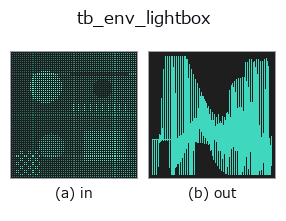

typed op• 데이터 종류: points → signal
• 호출: fullseye.apply(img, "tb_env_lightbox", a=0.5, b=0.5)(2-D 는 이미지 1 장 + 스칼라 노브 2 개 a,b∈[0,1] 모델)

*그림은 128×128 합성 입력에서 실제로 실행한 출력. 왼쪽이 입력, 오른쪽이 출력. 점군은 위에서 본 산점도(밝기 = z), 1-D 열은 꺾은선, 볼륨은 z 방향 최대값 투영, 동영상은 가운데 프레임, 복소 영상은 진폭이며, 그림이 되지 않는 반환값은 값 자체를 표시한다.*
노브 a 를 훑기(0.1 / 0.5 / 0.9, 다른 노브는 기본값):
▸ tb_env_lightbox: 노브 a 스윕 (문서 사이트)
노브 b 를 훑기(0.1 / 0.5 / 0.9, 다른 노브는 기본값):
▸ tb_env_lightbox: 노브 b 스윕 (문서 사이트)
단계(앞에 오는 op → 이 op, 왼쪽에서 오른쪽으로):
▸ tb_env_lightbox: 단계 (문서 사이트)
다른 영상에서도(합성 장면 / 사진 / 동전. 윗줄이 입력, 아랫줄이 그 출력. 노브는 기본값):
▸ tb_env_lightbox: 다른 입력 이미지 (문서 사이트)
촬영 라이트박스 환경(넓은 천장 조명 + 은은하게 밝은 주변). 무채색.
env_studio가 "극적으로 보이기" 위한 어두운 방 + 작은 소프트박스 2등인 데 비해, 이쪽은 가공면이 가공면으로 보이기 위한 환경. 2026-09-05의 실측으로알게 된 2가지 조건을 만족하도록 만들어 두었다:
• 주위가 밝을 것 ―― 어두운 환경이면 알루미늄이 새까매진다(반사율 ~0.9의 금속이검게 찍히는 것은 비치는 것이 검기 때문).
• 그래도 기울기가 있을 것 ―― 완전히 균일한 환경에서는 어떤 이방성 로브라도같은 값을 반환하므로 가공 자국이 사라진다. 브러시 자국이 보이는 것은 자국이 환경의 명암을자국 방향으로 늘이기 때문이다.
가공 자국은 비스듬히 보지 않으면 나오지 않는다(바로 위에서 본 평면은 반사 방향이 모든 화소에서 천정에집중해 환경의 기울기를 훑지 않는다). optical_camera(tilt_deg=50〜70) 정도가 기준.
2-D 진화 레지스트리로 연결한 optics의 op env_lightbox. 구현은 같고, 호출 규약만 op(v, a, b)에 맞췄다. a는 base(기본값 0.45), b는 key(기본값 4)를 바꾼다.
• 샘플 데이터 카탈로그(DL URL / 라이선스) —— 2-D 는 skimage.data(BSD/public)+ 합성, 3-D 는 실데이터 소스(Stanford/PDS 등)의 DL URL.
• 연산자의 내력·참고문헌 —— 이 연산자 족의 바탕이 된 연구/기법의 출처.
아래 프로그램은 실제로 실행됨을 확인했습니다(그림과 같은 입력). Studio 도움말에서는 이 블록이 버튼이 되어 즉시 불러와 실행할 수 있습니다.
img_to_points 0.50 0.50 tb_env_lightbox 0.50 0.50
아래 예제는 원래의 대장 op env_lightbox를 호출한다. 이 브리지 op는 같은 구현을 fn(v, a, b) 규약에 맞춘 것뿐이므로 동작은 그대로 적용된다(호출 형식만 다름).
• studio_raytrace_scene — py -3.11 examples/studio_raytrace_scene.py
signal 를 입력으로 받는 것)identity · tb_create_funct_1d_array · tb_smooth_funct_1d_gauss · tb_smooth_funct_1d_mean · tb_derivate_funct_1d · tb_integrate_funct_1d · tb_zero_crossings_funct_1d · tb_abs_funct_1d
typed)tb_points_to_voxel · tb_estimate_point_normals · tb_iss_keypoints · tb_project_points · tb_render_point_depth · tb_statistical_outlier_removal · tb_radius_outlier_removal · tb_voxel_grid_downsample
*Provenance: ops.py — 2D 연산자 레지스트리. 이 op 노트는 tools/opdocs.py md 가 자동 생성합니다(직접 편집하지 마세요).*
© 2026 Kazufumi Furuse — Fullseye operator documentation. Licensed under Apache-2.0.